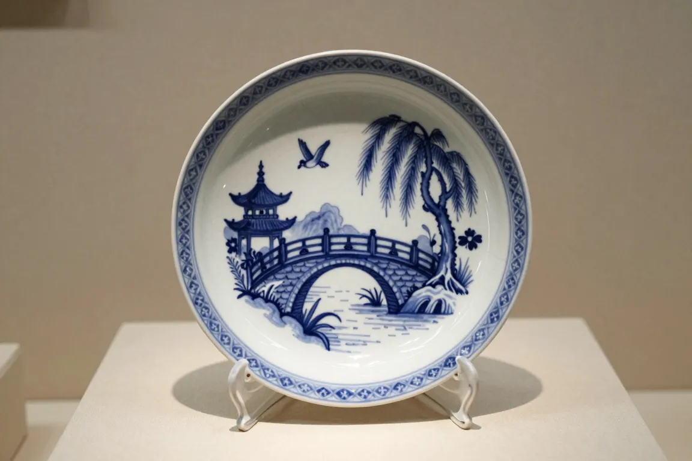

Белая гончарная посуда с синим узором на китайский лад, напечатанным с гравированной медной пластины. Узор «Ива» с мостом, деревом, лодкой и двумя птицами — самый известный из многих рисунков.

Главная идея
Медная пластина кладёт синюю картину в китайском стиле на дешёвую белую гончарную посуду, так что каждый дом владеет узором, который прежде мог купить только богатый.
Принципы дизайна
Гравируйте узор на медной пластине тонкими линиями и печатайте кобальтовой краской на тонкую бумагу.
Втирайте влажную бумагу в бисквитный черепок, чтобы синие линии перешли на поверхность.
Закрепляйте оттиск низким обжигом, затем окунайте вещь в прозрачную глазурь и обжигайте снова.
Располагайте картину кольцом: кайма, главная сцена и небольшой повтор на борту.
Рисуйте сцену с ивой: мост, дерево, пагода, лодка, забор и две птицы в небе.
Берите один глубокий ровный тон синего и прозрачную глазурь, остающуюся белой.
Ставьте название узора и марку мастерской на дно, чтобы покупатель мог заказать ещё.